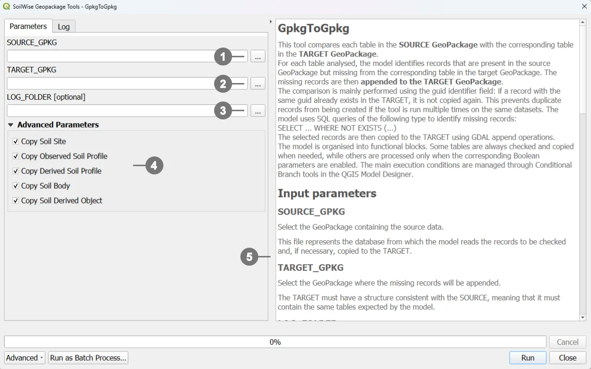

GpkgToGpkg is a QGIS Processing model designed to transfer data from a source GeoPackage, referred to as the SOURCE, to a destination GeoPackage, referred to as the TARGET.
During execution, the model compares the tables contained in the two GeoPackages and identifies records that are available in the SOURCE but are not yet present in the TARGET. Only the missing records are appended to the destination GeoPackage.
The comparison is primarily based on the guid field, which is used as a unique identifier. For some junction tables, the comparison is instead based on a combination of multiple fields. This approach allows the model to be run repeatedly on the same datasets while reducing the risk of creating duplicate records.
The model therefore performs an incremental synchronization:
The model has a modular structure. In addition to the required parameters, users can select which data groups should be transferred, choosing among Soil Sites, observed Soil Profiles, derived Soil Profiles, Soil Bodies, and Soil Derived Objects.
This selection is managed through QGIS Conditional Branch algorithms. Based on the enabled parameters, the model runs only the required workflow sections, including the associated descriptive tables, relationships, datastreams, and observations.
Important
The TARGET GeoPackage must already exist and must use a structure that is compatible with the SOURCE. In particular, it must contain the tables expected by the model.
Double-click GpkgToGpkg in the Processing Toolbox, or click the Run button in the Model Designer.

① The source GeoPackage.
② The target GeoPackage.
③ The optional log folder.
④ The data groups to be copied.
⑤ The right-hand side of the dialog also contains the model help panel. This panel provides a brief description of the tool and explains the purpose of the available parameters.
Click the RUN button to execute the model
The Source GeoPackage parameter identifies the source dataset.
This is the database from which the model reads the records that must be checked and, when necessary, copied.
The SOURCE:
To set this parameter, select the source file with the .gpkg extension.
The Target GeoPackage parameter identifies the destination dataset.
The model compares the SOURCE tables with the corresponding TARGET tables and appends only the records that are missing from the TARGET.
The TARGET must:
If a record with the same key is already present in the TARGET, it is not copied again.
Warning
The model does not create a complete copy of the SOURCE file and does not automatically create the full TARGET schema. Its purpose is to append missing records to a target GeoPackage that has already been prepared.
The Log Folder parameter identifies the directory in which the execution log will be saved.
The log can be used to:
If a valid folder is selected, the model saves the QGIS Processing log in that folder.
If the parameter is left empty:
Log export is controlled by the LOG conditional branch, which checks that the path is not null and is not an empty string.
The following parameters allow the transfer to be restricted to specific data groups.
They can be enabled individually or in combination. The selected combination determines which sections of the model are executed.
The Copy Soil Site parameter controls the transfer of data related to Soil Sites.
The model copies:
soilsite table that are not already present in the TARGET;The workflow therefore includes the Soil Site entity and its associated observational data.
The model does not copy:
soilsite records;Disabling this parameter does not prevent other selected data groups from being processed.
The Copy Observed Soil Profile parameter controls the transfer of observed Soil Profiles.
Observed profiles are identified by the following condition:
isderived = 0
The model copies:
Profiles where isderived = 0 are not appended to the TARGET.
Workflow sections that specifically depend on observed profiles, such as Soil Plots and some relationships with Soil Derived Objects, are also skipped.
The Copy Derived Soil Profile parameter controls the transfer of derived Soil Profiles.
Derived profiles are identified by the following condition:
isderived = 1
The model copies:
Profiles where isderived = 1 are not appended to the TARGET.
Relationships that require derived profiles are also not copied.
When both of the following parameters are enabled:
the model also enables the transfer of the isderivedfrom table.
This table represents the relationship between a derived profile and the observed profile from which it was derived.
The relationship is copied only when both profile groups are selected. This prevents the TARGET from receiving a relationship that points to a profile that has not been included.
The possible combinations are therefore:
isderivedfrom is not copied;isderivedfrom is not copied;isderivedfrom are copied;The Copy Soil Body parameter controls the transfer of data related to Soil Bodies.
The model copies:
soilbody table;soilbody_geom;derivedprofilepresenceinsoilbody, when derived Soil Profiles are also enabled;isbasedonsoilbody, when Soil Derived Objects are also enabled.The model does not copy:
This parameter can be combined with Copy Derived Soil Profile and Copy Soil Derived Object to preserve relationships between the corresponding domains.
The Copy Soil Derived Object parameter controls the transfer of Soil Derived Objects.
The model copies:
soilderivedobject table;isbasedonsoilderivedobject relationship table;isbasedonobservedsoilprofile, when observed Soil Profiles are also enabled;isbasedonsoilbody, when Soil Bodies are also enabled.The model does not copy:
The parameters can be used independently, but some combinations preserve a more complete set of relationships.
Enable:
The model copies Soil Sites, related datastreams, and linked observations.
Enable:
The model copies profiles where isderived = 0, Soil Plots, and the associated descriptive and observational data.
Enable:
The model copies profiles where isderived = 1 and the related data.
Enable:
The model copies both groups and the isderivedfrom relationship.
Enable:
The model can also copy the derivedprofilepresenceinsoilbody relationship.
Enable:
The model can also copy the isbasedonobservedsoilprofile relationship.
Enable:
The model can also copy the isbasedonsoilbody relationship.
Tip
To preserve all relationships between two domains, enable both relevant parameters. Otherwise, the model may omit the relationship table to avoid references to entities that are not present in the TARGET.
Note
Refer to the model’s technical documentation for a detailed explanation of its internal structure and workflow logic.